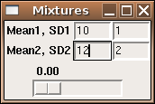
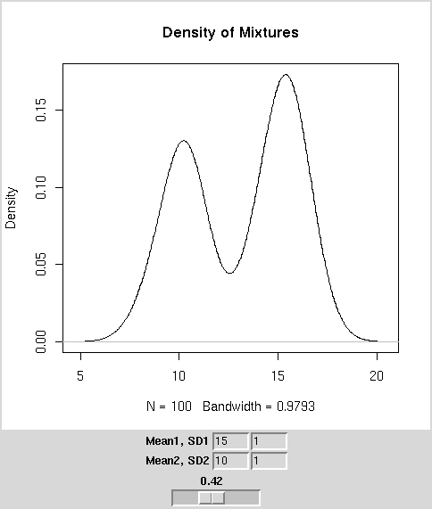
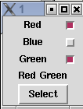
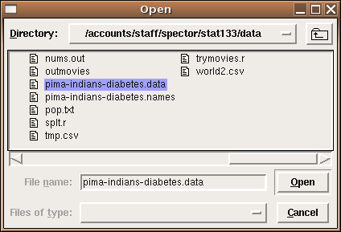
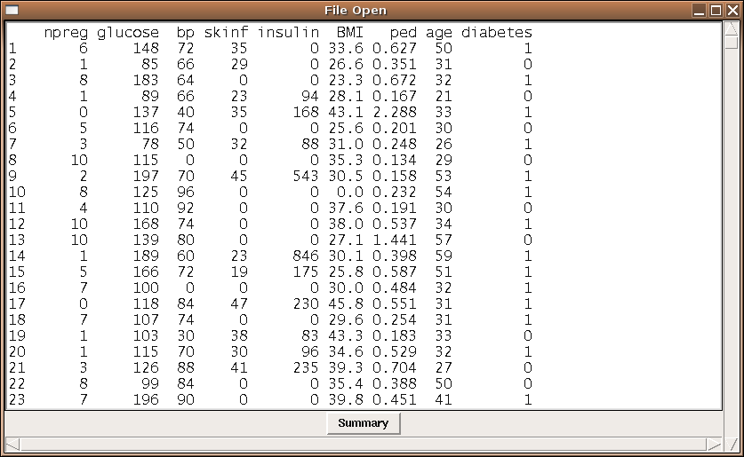
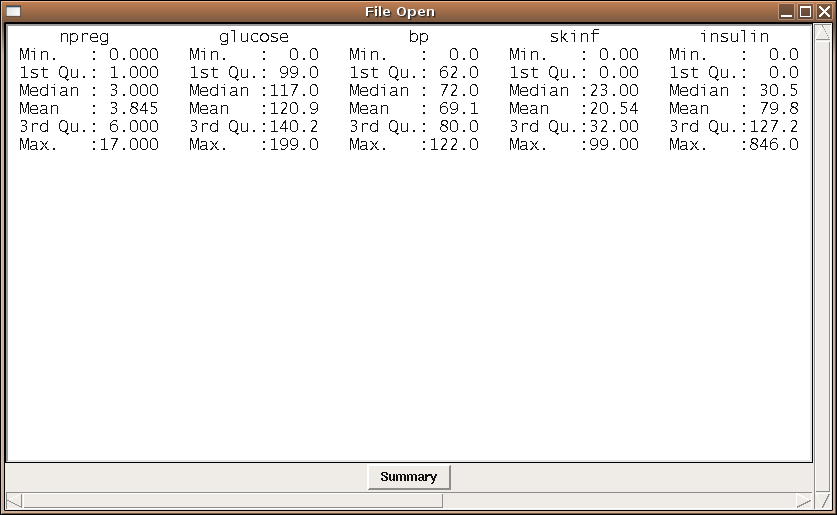

Graphical User Interfaces
1 Plotting
When developing a TK-based GUI for plotting, there are two possibilities available.
The first, which is the only choice if you need to interact with the graph using
locator or identify, is to create a GUI with the controls for the
plot, and to let R open a normal plotting window. The second option utilizes the
tkrplot library, available from CRAN, to create a label widget with an image
of the plot; this label can be placed anywhere that any other widget can be placed.
To illustrate the use of a GUI with plotting, consider
the problem of mixtures of normal distributions. Many times a sample will
actually contain
two separate distributions, even though it will be treated as a single distribution.
Obviously data like this will create problems when we try to analyze it, so it's
important to be able to recognize such data, using, say a density plot. To get
an idea of how the density of mixtures of distributions would look, we can create
a GUI using a scale or slider widget that will allow us to control the fraction
of each of two distributions that will be combined. Many times the first step
in making a GUI is writing the function that the GUI will eventually call to
actually do the work. This helps to identify the parameters that need to be
supplied to the function so that the GUI can be designed in such a way to get all
the necessary information. For this case, we'll want to specify the mean and
standard deviation of the first distribution, the mean and standard deviation of
the second distribution, and the fraction of the second distribution to use. (The
fraction for the first distribution will just be 1 minus the fraction for the
first distribution.) Here's such a function:
genplot = function(m1,s1,m2,s2,frac,n=100){
dat = c(rnorm((1-frac)*n,m1,s1),rnorm(frac*n,m2,s2))
plot(density(dat),type='l',main='Density of Mixtures')
}
Now we can create the interface. We'll make three frames: the first will accept
the mean and standard deviation for the first distribution, the second will have
the mean and standard deviation for the second distribution, and the third will
have the slider to determine the fraction of each distribution to use. Recall that
we need to create tcl variables, and then convert them into R variables
before we can call our function, so I'll use an intermediate function which will
do the translations and then call genplot as a callback. Although there
is a fair amount of code, most of it is very similar.
require(tcltk)
doplot = function(...){
m1 = as.numeric(tclvalue(mean1))
m2 = as.numeric(tclvalue(mean2))
s1 = as.numeric(tclvalue(sd1))
s2 = as.numeric(tclvalue(sd2))
fr = as.numeric(tclvalue(frac))
genplot(m1,s1,m2,s2,fr,n=100)
}
base = tktoplevel()
tkwm.title(base,'Mixtures')
mainfrm = tkframe(base)
mean1 = tclVar(10)
mean2 = tclVar(10)
sd1 = tclVar(1)
sd2 = tclVar(1)
frac = tclVar(.5)
m1 = tkframe(mainfrm)
tkpack(tklabel(m1,text='Mean1, SD1',width=10),side='left')
tkpack(tkentry(m1,width=5,textvariable=mean1),side='left')
tkpack(tkentry(m1,width=5,textvariable=sd1),side='left')
tkpack(m1,side='top')
m2 = tkframe(mainfrm)
tkpack(tklabel(m2,text='Mean2, SD2',width=10),side='left')
tkpack(tkentry(m2,width=5,textvariable=mean2),side='left')
tkpack(tkentry(m2,width=5,textvariable=sd2),side='left')
tkpack(m2,side='top')
m3 = tkframe(mainfrm)
tkpack(tkscale(m3,command=doplot,from=0,to=1,showvalue=TRUE,
variable=frac,resolution=.01,orient='horiz'))
tkpack(m3,side='top')
tkpack(mainfrm)
Here's how the interface looks:

To produce the same sort of GUI, but with the plot in the same frame as the
slider, we can use the tkrplot library. To place the plot in the
same frame as the slider, we must first create a tkrplot widget, using
the tkrplot function. After loading the tkrplot library,
we call this function with two arguments; the frame in which the plot is to
be displayed, and a callback function (using ... as the only argument)
that will draw the desired plot. In this example, we can use the same function
(doplot) as in the standalone version:
img = tkrplot(mainfrm,doplot)
Since the tkrplot widget works by displaying an image of the
plot, the only way to change the plot is to change this image, which is exactly
what the tkrreplot function does. The only argument to tkrreplot
is the tkrplot widget that will need to be redrawn. Thus, the slider
can be constructed with the following statements:
scalefunc = function(...)tkrreplot(img)
s = tkscale(mainfrm,command=scalefunc,from=0,to=1,showvalue=TRUE,
variable='frac',resolution=.01,orient='horiz')
By packing the tkrplot object first, followed by the frames for the mean
and standard deviations, and packing the slider widget last, we can produce the
GUI shown below:

The complete code for this GUI is as follows:
require(tcltk)
require(tkrplot)
genplot = function(m1,s1,m2,s2,frac,n=100){
dat = c(rnorm((1-frac)*n,m1,s1),rnorm(frac*n,m2,s2))
plot(density(dat),type='l',main='Density of Mixtures')
}
doplot = function(...){
m1 = as.numeric(tclvalue(mean1))
m2 = as.numeric(tclvalue(mean2))
s1 = as.numeric(tclvalue(sd1))
s2 = as.numeric(tclvalue(sd2))
fr = as.numeric(tclvalue(frac))
genplot(m1,s1,m2,s2,fr,n=100)
}
base = tktoplevel()
tkwm.title(base,'Mixtures')
mainfrm = tkframe(base)
mean1 = tclVar(10)
mean2 = tclVar(10)
sd1 = tclVar(1)
sd2 = tclVar(1)
frac = tclVar(.5)
img = tkrplot(mainfrm,doplot)
scalefunc = function(...)tkrreplot(img)
s = tkscale(mainfrm,command=scalefunc,from=0,to=1,showvalue=TRUE,
variable=frac,resolution=.01,orient='horiz')
tkpack(img)
m1 = tkframe(mainfrm)
tkpack(tklabel(m1,text='Mean1, SD1',width=10),side='left')
tkpack(tkentry(m1,width=5,textvariable=mean1),side='left')
tkpack(tkentry(m1,width=5,textvariable=sd1),side='left')
tkpack(m1,side='top')
m2 = tkframe(mainfrm)
tkpack(tklabel(m2,text='Mean2, SD2',width=10),side='left')
tkpack(tkentry(m2,width=5,textvariable=mean2),side='left')
tkpack(tkentry(m2,width=5,textvariable=sd2),side='left')
tkpack(m2,side='top')
tkpack(s)
tkpack(mainfrm)
2 Binding
For those widgets that naturally have an action or variable associated
with them, the Tk interface provides arguments like textvariable=,
or command= to make it easy to get these widgets working as they
should. But we're not limited to associating actions with only those
widgets that provide such arguments. By using the tkbind command,
we can associate a function (similar to those accepted by functions
that use a command= argument) to any of a large number of possible
events. To indicate an event, a character string with the event's name
surrounded by angle brackets is used. The following table shows some of
the actions that can have commands associated with them. In the table,
a lower case x is used to represent any key on the keyboard.
| <Return> | <FocusIn> |
| <Key-x> | <FocusOut> |
| <Alt-x> | <Button-1>, <Button-2>, etc. |
| <Control-x> | <ButtonRelease-1>, <ButtonRelease-2>, etc. |
| <Destroy> | <Double-Button-1>, <Double-Button-2> , etc. |
As an example, suppose we wish to create a GUI that will allow the user to
type in the name of a data frame, and when the user hits return in the
entry field, a set of radio buttons, one for each variable in the data
frame, will open up below the entry field. Finally, a button will allow
for the creation of a histogram from the selected variable.
require(tcltk)
makehist = function(...){
df = get(tclvalue(dfname))
thevar = tclvalue(varname)
var = as.numeric(df[[thevar]])
hist(var,main=paste("Histogram of",thevar),xlab=thevar)
}
showb = function(...){
df = get(tclvalue(dfname))
vars = names(df)
frms = list()
k = 1
mkframe = function(var){
fr = tkframe(base)
tkpack(tklabel(fr,width=15,text=var),side='left')
tkpack(tkradiobutton(fr,variable=varname,value=var),side='left')
tkpack(fr,side='top')
fr
}
frms = sapply(vars,mkframe)
tkpack(tkbutton(base,text='Run',command=makehist),side='top')
}
base = tktoplevel()
tkwm.title(base,'Chooser')
dfname = tclVar()
varname = tclVar()
efrm = tkframe(base)
tkpack(tklabel(efrm,text='Dataframe: '),side='left')
dfentry = tkentry(efrm,textvariable=dfname,width=20)
tkbind(dfentry,'<Return>',showb)
tkpack(dfentry,side='left')
tkpack(efrm)
Here's a picture of the widget in both the "closed" and "open" views:
As another example, recall the calculator we developed earlier. To allow us
to enter values from the keyboard in addition to clicking on the calculator
"key", we could modify the mkput function from that example as
follows:
mkput = function(sym){
fn = function(...){
calcinp <<- paste(calcinp,sym,sep='')
tkconfigure(display,text=calcinp)
}
tkbind(base,sym,fn)
fn
}
When we define each key, we also bind that key to the same
action in the base window.
Similar actions could be done for the "C" and "=" keys:
tkbind(base,'c',clearit)
tkbind(base,'=',docalc)
Now input from the calculator can come from mouse clicks or the
keyboard.
3 Checkbuttons
When we created radiobuttons, it was fairly simple, because we only needed
to create one tcl variable, which would contain the value
of the single chosen radiobutton. With checkbuttons, the user can choose
as many selections as they want, so each button must have a separate
tcl variable associated with it. While it's possible to do this
by hand for each choice provided, the following example shows how to use
the sapply function to do this in a more general way. Notice that
special care must be taken when creating a list of tcl variables to
insure that they are properly stored. In this simple example, we
print the choices, by using sapply to convert the list of tcl
variables to R variables. Remember that all the toplevel variables that you
create in an R GUI are available in the console while the GUI is running, so
you examine them in order to see how their information is stored.
require(tcltk)
tt <- tktoplevel()
choices = c('Red','Blue','Green')
bvars = lapply(choices,function(i)tclVar('0'))
# or bvars = rep(list(tclVar('0')),length(bvars))
names(bvars) = choices
mkframe = function(x){
nn = tkframe(tt)
tkpack(tklabel(nn,text=x,width=10),side='left')
tkpack(tkcheckbutton(nn,variable=bvars[[x]]),side='right')
tkpack(nn,side='top')
}
sapply(choices,mkframe)
showans = function(...){
res = sapply(bvars,tclvalue)
res = names(res)[which(res == '1')]
tkconfigure(result,text = paste(res,collapse=' '))
}
result = tklabel(tt,text='')
tkpack(result,side='top')
bfrm = tkframe(tt)
tkpack(tkbutton(bfrm,command=showans,text='Select'),side='top')
tkpack(bfrm,side='top')
The figure below shows what the GUI looks like after two choices
have been made, and the button is pressed.

4 Opening Files and Displaying Text
While it would be very simple (and not necessarily a bad idea) to use an
entry field to specify a file name, the Tk toolkit provides a file browser
which will return the name of a file which a user has chosen, and will usually
be a better choice if you need to open a file.
Another issue that arises has to do with displaying output. If the output is
a plot, it's simple to just open a graph window; if the output is text, you
can just print it in the normal way, and it will display in the same place
as you typed the R command to display the GUI. While this is useful while
debugging your program, if there are printed results they should usually be
displayed in a separate window. For this purpose, Tk provides the
tktext object. To display output in this way, we can use the
capture.output function, which takes the output of any R command
and, instead of displaying it to the screen, stores the output in a
vector of character values.
Alternatively,
the output could be written to a file,
then read back into a character vector.
The following example program invokes tkgetOpenFile to get the name of a file
to be opened; it then opens the file, reads it as a CSV file and displays the
results in a text window with scrollbars. The wrap='none' argument
tells the text window not to wrap the lines; this is appropriate when you have
a scrollbar in the x-dimension. Finally, to give an idea of how the text
window can be modified, a button is added to change the text window's display
from the listing of the data frame to a data frame summary.
require(tcltk)
summ = function(...){
thestring = capture.output(summary(myobj))
thestring = paste(thestring,collapse='\n')
tkdelete(txt,'@0,0','end')
tkinsert(txt,'@0,0',thestring)
}
fileName<-tclvalue(tkgetOpenFile())
myobj = read.csv(fileName)
base = tktoplevel()
tkwm.title(base,'File Open')
yscr <- tkscrollbar(base,
command=function(...)tkyview(txt,...))
xscr <- tkscrollbar(base,
command=function(...)tkxview(txt,...),orient='horiz')
txt <- tktext(base,bg="white",font="courier",
yscrollcommand=function(...)tkset(yscr,...),
xscrollcommand=function(...)tkset(xscr,...),
wrap='none',
font=tkfont.create(family='lucidatypewriter',size=14))
tkpack(yscr,side='right',fill='y')
tkpack(xscr,side='bottom',fill='x')
tkpack(txt,fill='both',expand=1)
tkpack(tkbutton(base,command=summ,text='Summary'),side='bottom')
thestring = capture.output(print(myobj))
thestring = paste(thestring,collapse='\n')
tkinsert(txt,"end",thestring)
tkfocus(txt)
The first picture shows the file chooser (as displayed on a Linux system);
the second picture shows the diabetes data set displayed in a text window,
and the third picture shows the result of pressing the summary button.



File translated from
TEX
by
TTH,
version 3.67.
On 11 Apr 2011, 18:09.